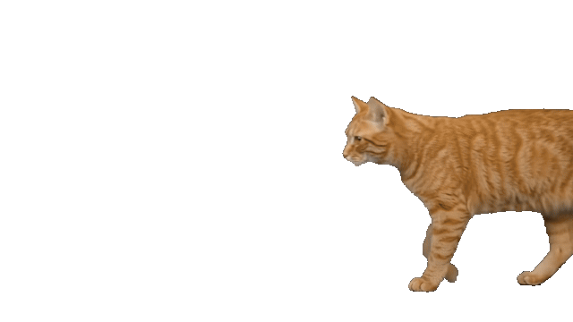
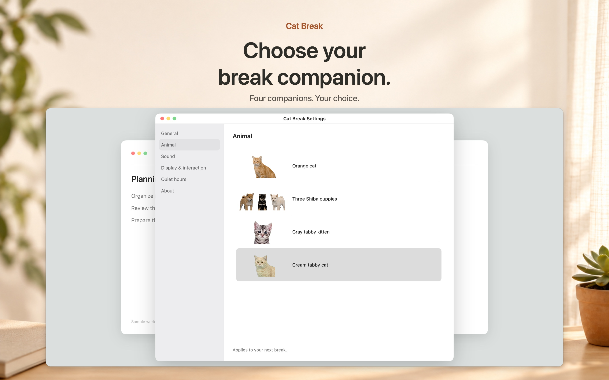
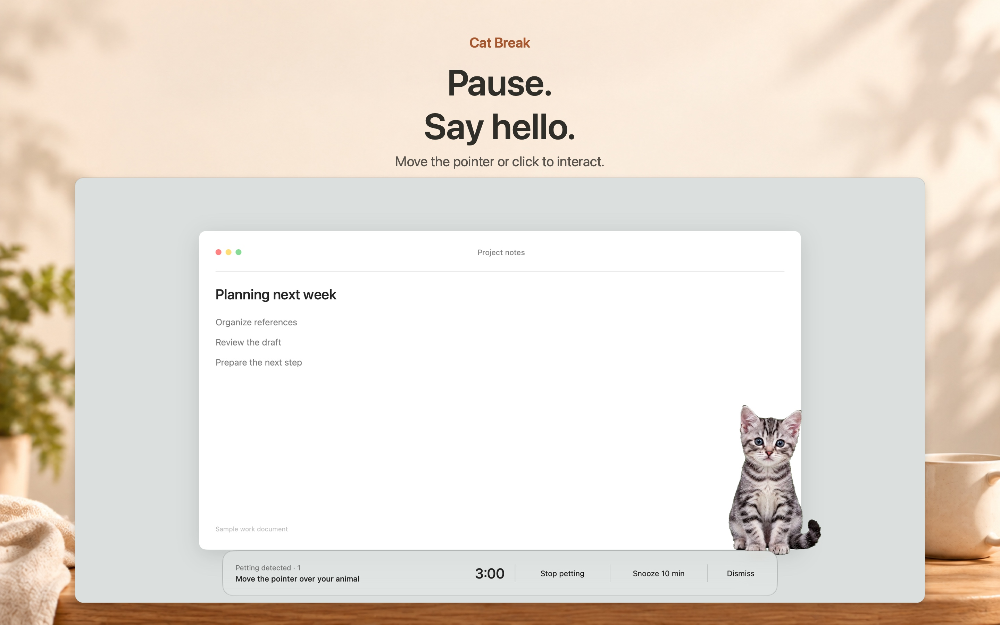
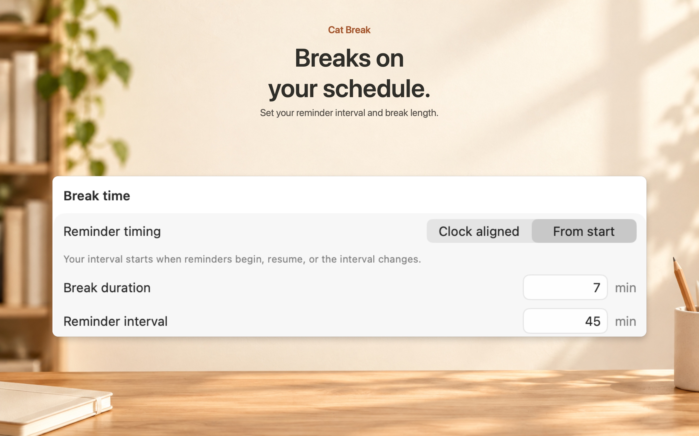

A pause, made simple
A small break in your day.
- 01
Choose a companion
Choose the animal you would like to see in Settings.
- 02
Take a moment
Start a break when you like, or let a reminder bring them by.
- 03
Return when ready
Give the cat a gentle pet, snooze the reminder, or close the break.
Cat Break
A familiar face.
Watch the cat arrive, settle down, and make room for a little pause.
Download on the Mac App Store
02 · Cat Break
Choose your companion.
Pick the animal you would like to spend your next break with.

03 · Cat Break
A small moment of connection.
Choose Pet, then move your pointer over the animal or click to interact.

04 · Cat Break
Find your rhythm.
Set the reminder interval and break length to suit your day.

Privacy
Privacy, kept simple.
Your settings and break history stay on your Mac. Cat Break has no account, ads, or analytics.
Support
Need a hand?
For help with Cat Break, send us an email.